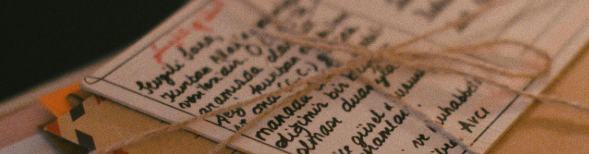

Using LLMs for Qualitative Data Research
09:00-10:30
Presentation: Potentials and limitations of LLMs for qualitative research; Responsible Usage of LLMs.
Recent AI developments have opened new perspectives for qualitative research. While corpus-based discourse or content analysis traditionally treated texts as a "bag of words" and identified linguistic patterns based on frequency distributions, Large Language Models (LLMs) offer a significantly more profound ability to process language, semantics, and context.
This workshop will introduce how LLMs can be integrated into qualitative research by providing insights into their capabilities and limitations, alongside hands-on training in prompt engineering, model implementation, and critical bias evaluation—all demonstrated through practical analysis of earthquake newspaper reporting and their argumentative units.
Presentation: Potentials and limitations of LLMs for qualitative research; Responsible Usage of LLMs.
Hands-On: How to use open weight or open source models via JupyerHPC, Huggingface Jobs and API for local models.
Learn how to apply qualitative research methods via LLMs and transform unstructured data into structured data. Learn how to prompt engineer for qualitative research methods.
Free Practice Session: Create your own project pipline and try out models and computing environments with your own data.
Critical assessment of LLM outputs, understanding biases, and implementing quality control measures in research workflows

Let's experiment: can we improve results with small models through fine-tuning?